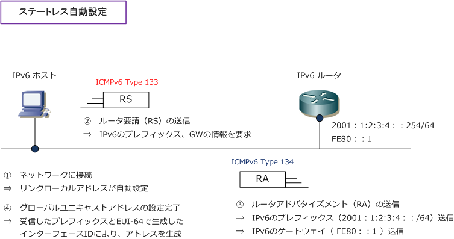
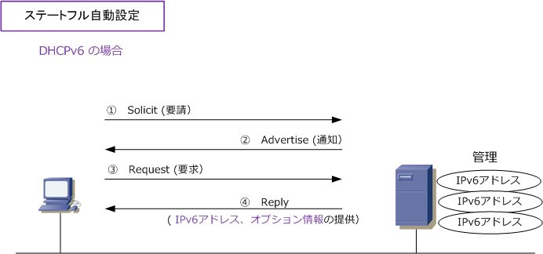
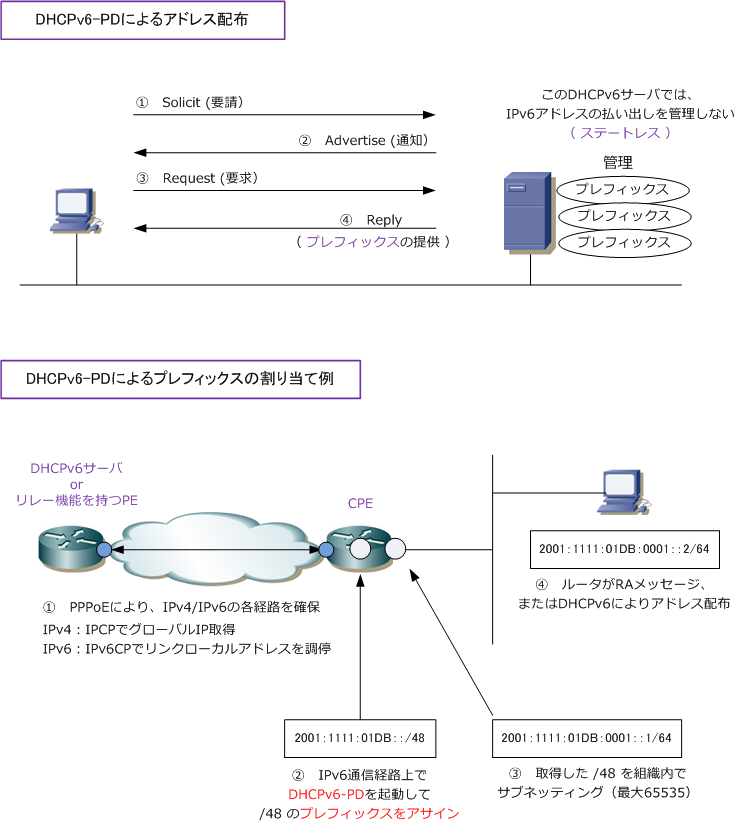

IPv6 addressing - Stateless / Statefull / DHCPv6
IPv6アドレス - RAによるステートレス自動設定
ステートレス自動設定では「プレフィックス」が自動的に設定され、「インターフェースID」はEUI-64で 生成させます。このステートレス自動設定はオートコンフィグレーションとも呼ばれています。この方法は IPv6対応のルータとIPv6対応の端末とが、RSとRAというメッセージをやり取りすることで実現しています。
| 2種類のメッセージ | 宛先アドレス | 内容 |
|---|---|---|
| RS（Router Solicitation） | FF02：：2 | ルータ要請。IPv6対応ホストが、IPv6対応ルータに送信するメッセージ。 IPv6のプレフィックス、デフォルトゲートウェイ等を要求するメッセージ。 |
| RA（Router Advertisement） | FF02：：1 | ルータアドバタイズメント。RSを受信したときに応答するメッセージ。 ホストに割り当てるプレフィックス、デフォルトゲートウェイの情報を含む。 |

?@?A IPv6対応のホストはインターフェースでIPv6が有効であれば、リンクアップした時点でリンクローカル アドレスは自動的に設定されます。次にそのリンクローカルアドレスを送信元アドレスとして同一セグメントの ルータにRS（ルータ要請）メッセージを送信し、グローバルユニキャストのプレフィックスを得ようとします。
?B ホストからRSメッセージを受信したルータはRA (ルータアドバタイズメント) を送信します。この情報に IPv6ホストに割り当てるプレフィックス、デフォルトゲートウェイ、有効期限などの情報が含まれています。
?C RAを受信したホストは受信したプレフィックスと自身のMACアドレスを利用してEUI-64により生成した インターフェースIDを組み合わせることで、グローバルユニキャストアドレスを生成し自動設定が完了します。
Ciscoルータでは ipv6 unicast-routing とグローバルで定義することによって、イーサネットの I/F 上では デフォルトでRAメッセージが送信されることになります。その他のインターフェースタイプの場合、I/F上で 手動で no ipv6 nd ra suppress とコマンド設定することにより、RAメッセージを送信することができます。 また、RAメッセージは ipv6 nd ra suppress によりインターフェースごとに個別でディセーブルにできます。
Cisco IOS - 定期的に送信されるRAを停止するコマンド
Cisco(config-if) # ipv6 nd ra suppress
Cisco IOS - 定期的に送信されるRAの停止、RSに応答するRAについても停止するコマンド
Cisco(config-if) # ipv6 nd ra suppress all
IPv6アドレス - ステートフル自動設定
ステートフル自動設定では「プレフィックス と インターフェースID」をDHCPv6サーバにより割り当てます。 また、ステートフル自動設定は、DHCPv6サーバからIPv6アドレス情報だけでなく、DNSサーバなども付与 することも可能です。DHCPv6サーバはIPv6アドレスという点は除いて、DHCPv4サーバと同じ動作をします。

ただしDHCPv6サーバ単体だけでは完全に機能しないので、ルータが送信するRA（Router Advertisement）の MフラグとOフラグという2つのフィールドと連携する必要があります。DHCPv6クライアントのIPv6ホストは ルータが送信するRAに含まれる2つのフラグを見てから、IPv6アドレスをどこから取得するのかを決定します。
| RAのフラグ | 説明 |
|---|---|
| Mフラグ | IPv6アドレスをDHCPv6サーバで取得するか、RAで得たプレフィックスから自身で生成するかを決定。 ONの場合、DHCPv6サーバから取得する。OFFの場合、RAで得たプレフィックスから自身で生成する。 |
| Oフラグ | IPv6アドレス以外のパラメータをDHCPv6サーバから取得するか、取得しないかを決定。 ONの場合、DHCPv6サーバから取得する。OFFの場合、DHCPv6サーバから取得しない（手動設定） |
| パターン | Mフラグ | Oフラグ | 説明 |
|---|---|---|---|
| 1 | ON ( 1 ) |
ON ( 1 ) |
・ DHCPv6サーバを使用したステートフル自動設定 ・ DHCPv6サーバからIPv6アドレス、GW、DNSなどを取得できる ・ DHCPv6サーバでクライアントに割り当てたIPv6アドレスを管理 ※ 現時点でDHCPv6でデフォルトゲートウェイ情報を配布できない |
| 2 | ON ( 1 ) |
OFF ( 0 ) |
・ IPv6アドレスはDHCPv6サーバから取得して、他のパラメータは手動設定 |
| 3 | OFF ( 0 ) |
ON ( 1 ) |
・ DHCPv6サーバを使用したステートレス自動設定 ・ IPv6アドレスやGWは、RAからの情報に基づいて自身で生成する ・ IPv6アドレス以外のパラメータ（DNS等）はDHCPv6サーバから取得する |
| 4 | OFF ( 0 ) |
OFF ( 0 ) |
・ RAのみを利用したステートレス自動設定 ・ IPv6アドレスやGWは、RAからの情報に基づいて自身で生成する ・ IPv6アドレス以外のパラメータ（DNS等）は手動で設定する ※ RFC6106に対応していれば、DNSサーバのIPもRAで配布できる！ |
Ciscoのインターフェースはデフォルトで、MフラグOフラグともにOFF（ 0 ）でありパターン4のRAを 送出します。Mフラグ、Oフラグの設定方法は以下のコマンドにより変更できます。
Cisco IOS - M（Managed）フラグのON（1）にするための設定
Cisco(config-if) # ipv6 nd managed-config-flag
Cisco IOS - O（Other Config）フラグのON（1）にするための設定
Cisco(config-if) # ipv6 nd other-config-flag
パターン1 現時点ではデフォルトゲートウェイの情報を 規格上では、DHCPv6から配布できないため あまり使用されていません。
パターン2 とても管理者の手間のかかる方式であるため このパターンの実装は先ずありません。
パターン3 現在、最も使用されているアドレス配布方式。
パターン4 RFC6106により今後多くのIPv6ネットワークで 採用されていく可能性が高いアドレス配布方式。
DHCPv6-PDによるIPv6アドレス配布
DHCPv6によるアドレス配布には、DHCPv6-PD（prefix delegation）と呼ばれる方式があり、この方式では ホストまたはルータにプレフィックスのみを払い出します。DHCPv6-PDによるIPv6払い出し例を見てみます。
